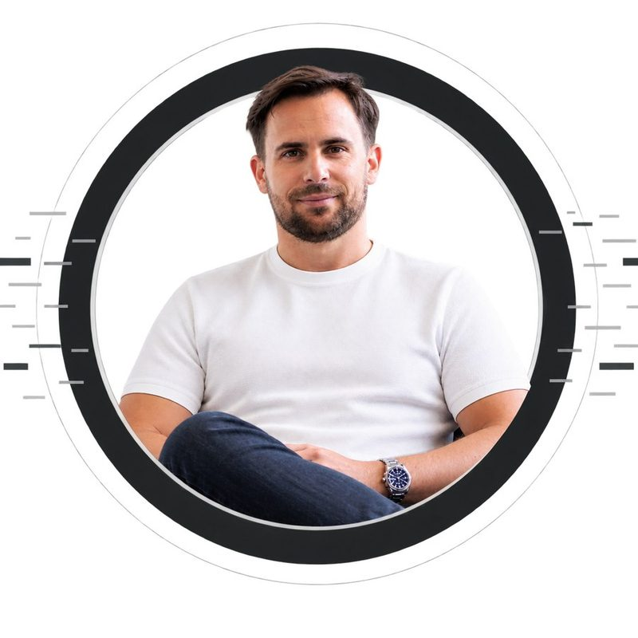
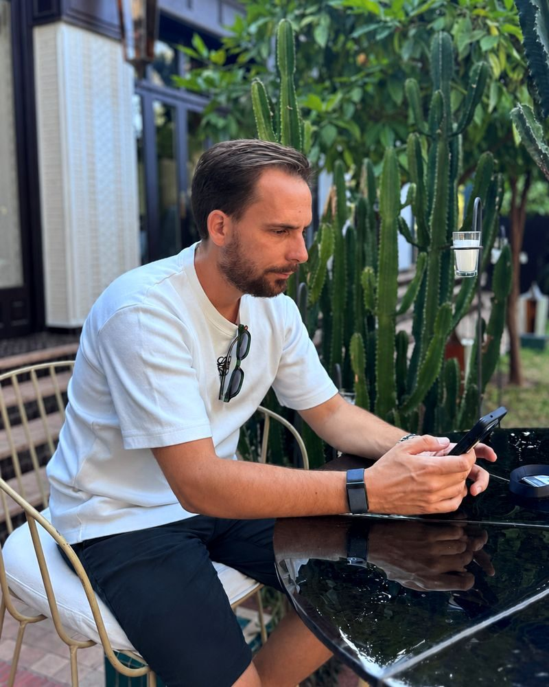
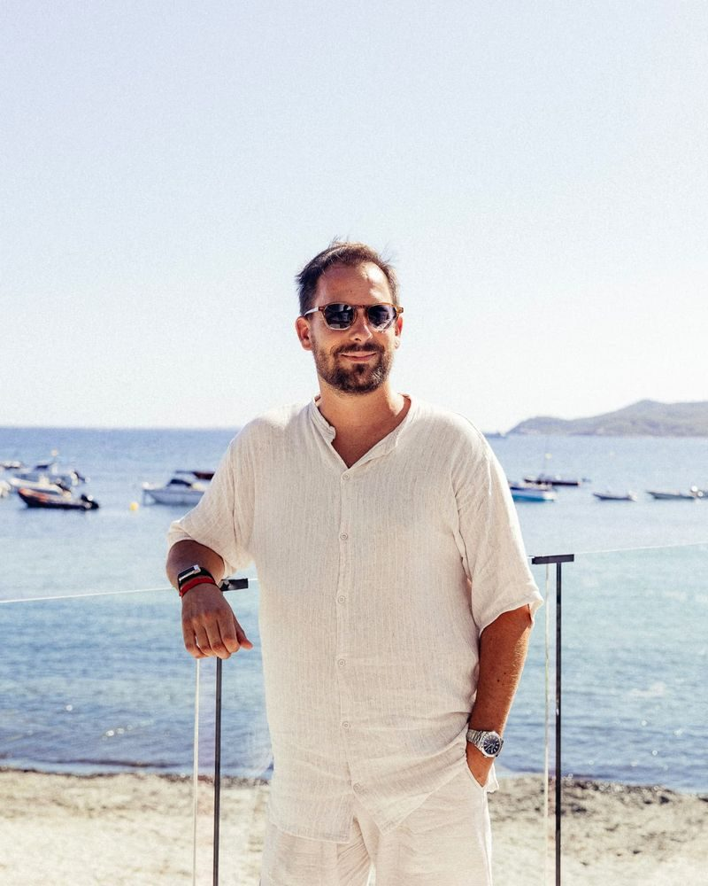
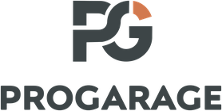
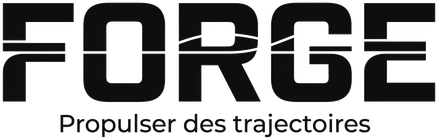

Guillaume Herbin, multi-entrepreneur de l'auto
Depuis 2010, j'ai cofondé plusieurs entreprises autour de l'automobile. Ma mission aujourd'hui : aider les pros de l'auto à construire des entreprises rentables et structurées.
J'ai démarré ma première activité en 2010 avec 3000 € en poche, pour bâtir un réseau de plus de 100 agences qui vend plus de 10 000 véhicules par an — puis des solutions digitales, un logiciel pour les garages, et maintenant la transmission.

900+
marchands dans l'écosystème
40 000+
véhicules vendus par an
10+
marques créées
Qui suis-je
Je suis un entrepreneur français, né en 1989 à Orléans, et j'évolue dans l'univers automobile depuis plus de quinze ans.
En 2010, je cofonde BH Car avec une idée simple : repenser la manière de vendre des véhicules d'occasion et développer un modèle capable d'aller bien au-delà d'une seule agence. Au fil des années, cette aventure devient le Groupe BH, un réseau national de plus de 100 agences organisé autour de plusieurs métiers de l'automobile, de l'intermédiation à la mécanique et au vitrage.
Mais mon parcours ne se résume pas à la croissance d'un réseau. J'ai aussi développé des activités dans le digital et les logiciels automobiles, avec la volonté de créer des outils qui simplifient le quotidien des professionnels du secteur.
Parti de zéro, j'ai connu les premières ventes, les premières erreurs, les recrutements, les périodes de croissance comme les moments de doute — avant de bâtir des équipes et des organisations capables de fonctionner sans moi au quotidien. C'est probablement ce qui caractérise le mieux mon approche : partir d'une idée, la tester sur le terrain, la structurer, puis créer les conditions de son développement à grande échelle.
Après plusieurs années passées à Dubaï, je me suis installé à Marrakech, d'où je pilote aujourd'hui mes activités, entouré d'équipes implantées en France. Je consacre mon énergie à la stratégie, aux nouveaux projets, à l'investissement et à la transmission.
Passionné d'automobile depuis bien avant d'en faire mon métier, je garde un intérêt particulier pour les voitures de caractère et l'univers auto sous toutes ses formes.
Père de deux garçons, j'accorde une place essentielle à ma vie de famille. Avec ma femme et mes enfants, on aime découvrir le monde, enchaîner les road trips et multiplier les expériences, qu'elles soient luxueuses ou toutes simples. Parce qu'au fond, ce ne sont pas les choses qui font les souvenirs, mais les personnes avec qui on les partage.


À 20 ans, mon objectif était simple : pouvoir arrêter de travailler à 40. C'est possible depuis mes 35 ans. Et pourtant, je n'ai jamais autant travaillé que ces dernières années — parce que ce n'est plus une question de nécessité, mais d'envie.
Aujourd'hui, mon ambition ne se limite plus à développer des entreprises. Elle est aussi de transmettre ce que j'ai appris, d'investir dans de nouveaux projets et, surtout, d'écrire la suite de mon histoire.
Mes activités
Depuis 2010
Réseau de franchise multi-marques : 100+ agences, 10 000+ véhicules vendus par an.
Depuis 2017
Solutions digitales et logiciels pour les pros de la vente de véhicules d'occasion : Vroomiz, Optimcar, Vobiz. Plus de 900 marchands clients récurrents et 40 000 véhicules vendus par an.
Depuis 2026

Un environnement complet dédié aux garages indépendants. Plus de 300 ateliers en France s'appuient sur cet écosystème au quotidien pour piloter leur activité et rester libres tout en s'équipant comme les grands réseaux.
Depuis 2026

J'ai appris les métiers de l'automobile sans personne pour me guider. Forge existe pour que vous n'ayez pas à faire pareil.